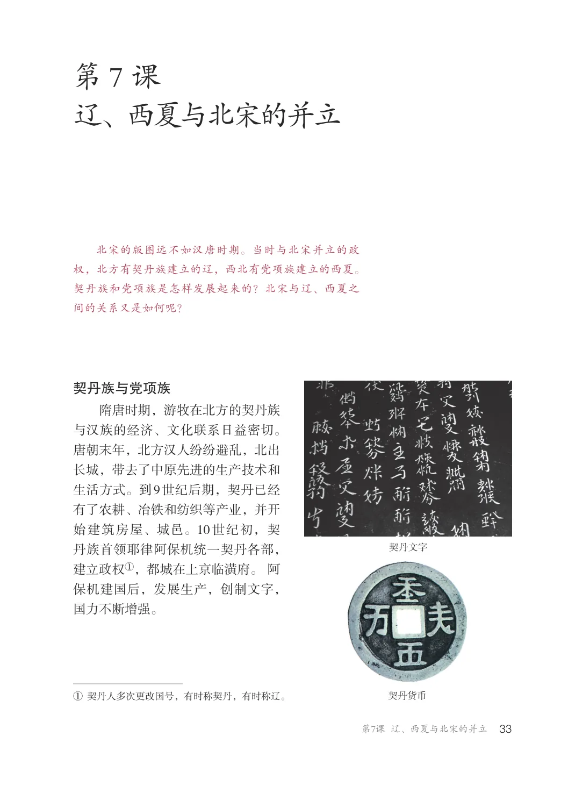
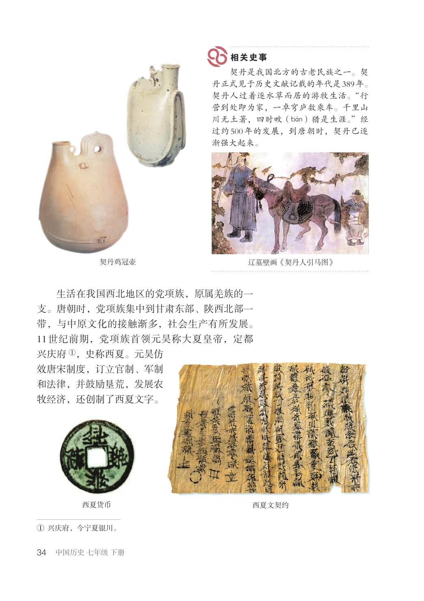
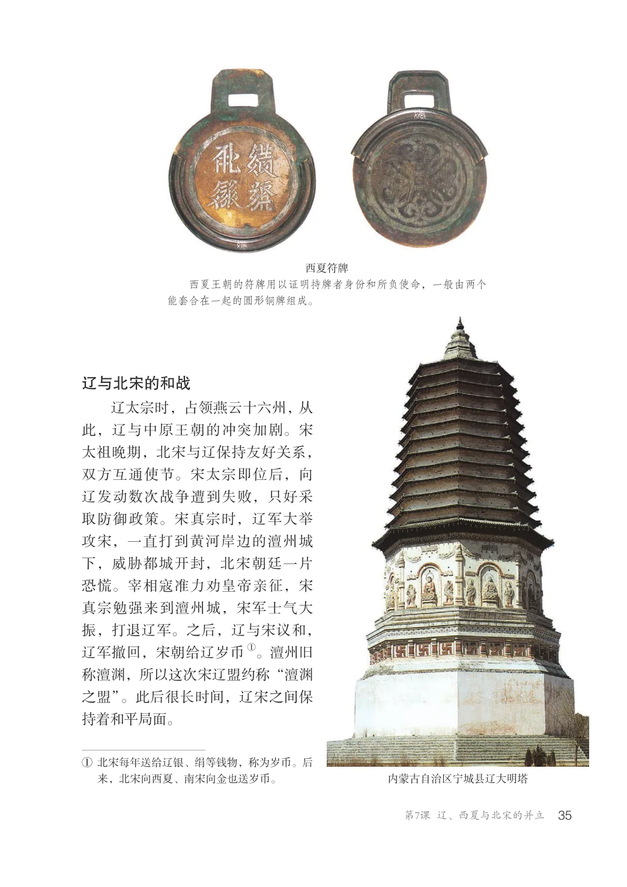
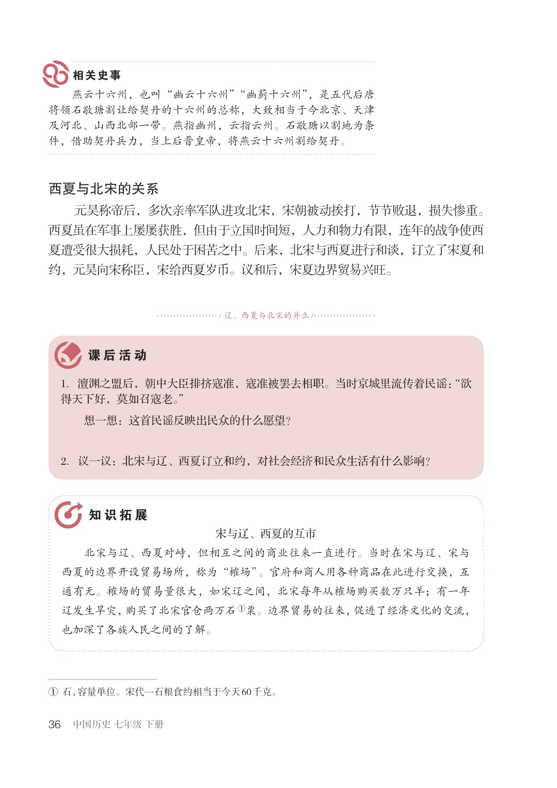

第2单元 · 教材第 33–36 页
第7课 辽、西夏与北宋的并立
文字版依据教材 PDF 文本层整理；复杂地图、图表及版面关系请以右侧教材原页为准。
北宋的版图远不如汉唐时期。当时与北宋并立的政权，北方有契丹族建立的辽，西北有党项族建立的西夏。契丹族和党项族是怎样发展起来的？北宋与辽、西夏之间的关系又是如何呢？
契丹族与党项族
隋唐时期，游牧在北方的契丹族与汉族的经济、文化联系日益密切。唐朝末年，北方汉人纷纷避乱，北出长城，带去了中原先进的生产技术和生活方式。到9世纪后期，契丹已经有了农耕、冶铁和纺织等产业，并开始建筑房屋、城邑。10世纪初，契丹族首领耶律阿保机统一契丹各部，建立政权①，都城在上京临潢府。阿保机建国后，发展生产，创制文字，国力不断增强。
契丹文字
契丹货币
①契丹人多次更改国号，有时称契丹，有时称辽。

契丹是我国北方的古老民族之一。契丹正式见于历史文献记载的年代是389年。契丹人过着逐水草而居的游牧生活。“行营到处即为家，一卓穹庐数乘车。千里山川无土著，四时畋（tiWn）猎是生涯。”经过约500年的发展，到唐朝时，契丹已逐渐强大起来。
契丹鸡冠壶
辽墓壁画《契丹人引马图》
生活在我国西北地区的党项族，原属羌族的一支。唐朝时，党项族集中到甘肃东部、陕西北部一带，与中原文化的接触渐多，社会生产有所发展。11世纪前期，党项族首领元昊称大夏皇帝，定都兴庆府①，史称西夏。元昊仿效唐宋制度，订立官制、军制和法律，并鼓励垦荒，发展农牧经济，还创制了西夏文字。
西夏货币
西夏文契约
①兴庆府，今宁夏银川。

西夏符牌西夏王朝的符牌用以证明持牌者身份和所负使命，一般由两个能套合在一起的圆形铜牌组成。
辽与北宋的和战
辽太宗时，占领燕云十六州，从此，辽与中原王朝的冲突加剧。宋太祖晚期，北宋与辽保持友好关系，双方互通使节。宋太宗即位后，向辽发动数次战争遭到失败，只好采取防御政策。宋真宗时，辽军大举攻宋，一直打到黄河岸边的澶州城下，威胁都城开封，北宋朝廷一片恐慌。宰相寇准力劝皇帝亲征，宋真宗勉强来到澶州城，宋军士气大振，打退辽军。之后，辽与宋议和，①。澶州旧
辽军撤回，宋朝给辽岁币称澶渊，所以这次宋辽盟约称“澶渊之盟”。此后很长时间，辽宋之间保持着和平局面。
①北宋每年送给辽银、绢等钱物，称为岁币。后
内蒙古自治区宁城县辽大明塔
来，北宋向西夏、南宋向金也送岁币。

燕云十六州，也叫“幽云十六州”“幽蓟十六州”，是五代后唐将领石敬瑭割让给契丹的十六州的总称，大致相当于今北京、天津及河北、山西北部一带。燕指幽州，云指云州。石敬瑭以割地为条件，借助契丹兵力，当上后晋皇帝，将燕云十六州割给契丹。
西夏与北宋的关系
元昊称帝后，多次亲率军队进攻北宋，宋朝被动挨打，节节败退，损失惨重。西夏虽在军事上屡屡获胜，但由于立国时间短，人力和物力有限，连年的战争使西夏遭受很大损耗，人民处于困苦之中。后来，北宋与西夏进行和谈，订立了宋夏和约，元昊向宋称臣，宋给西夏岁币。议和后，宋夏边界贸易兴旺。
/ 辽、西夏与北宋的并立/
1．澶渊之盟后，朝中大臣排挤寇准，寇准被罢去相职。当时京城里流传着民谣：“欲得天下好，莫如召寇老。”
想一想：这首民谣反映出民众的什么愿望？
2．议一议：北宋与辽、西夏订立和约，对社会经济和民众生活有什么影响？
宋与辽、西夏的互市北宋与辽、西夏对峙，但相互之间的商业往来一直进行。当时在宋与辽、宋与西夏的边界开设贸易场所，称为“榷场”。官府和商人用各种商品在此进行交换，互通有无。榷场的贸易量很大，如宋辽之间，北宋每年从榷场购买数万只羊；有一年辽发生旱灾，购买了北宋官仓两万石①粟。边界贸易的往来，促进了经济文化的交流，也加深了各族人民之间的了解。
①石，容量单位。宋代一石粮食约相当于今天60千克。
